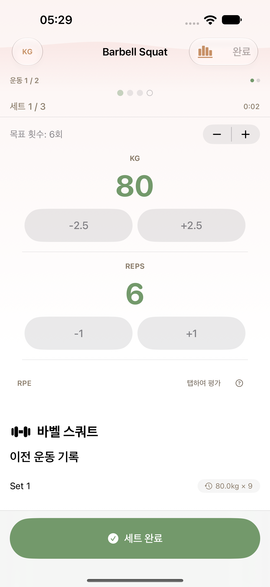
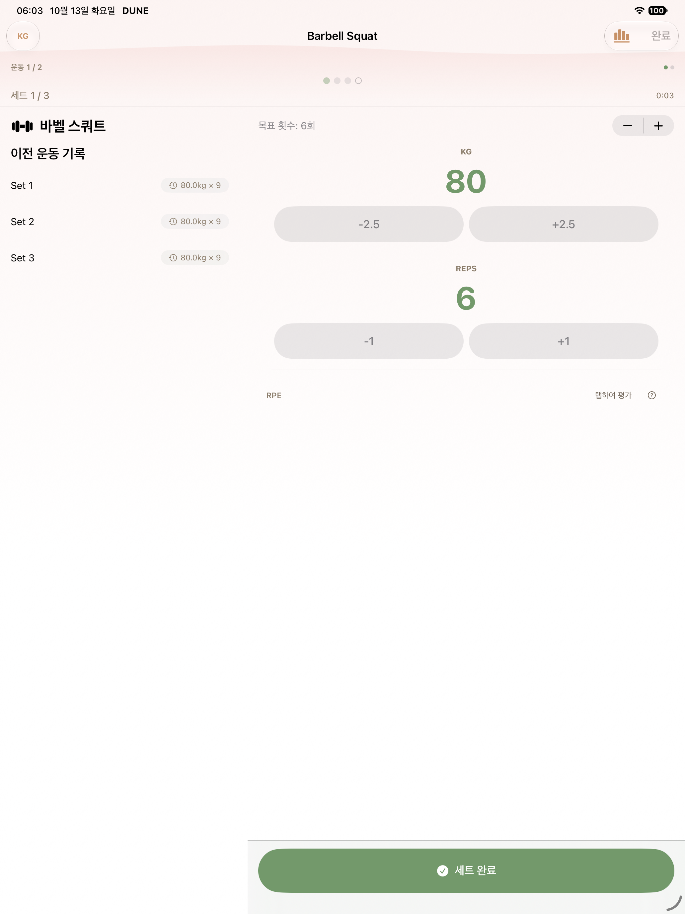
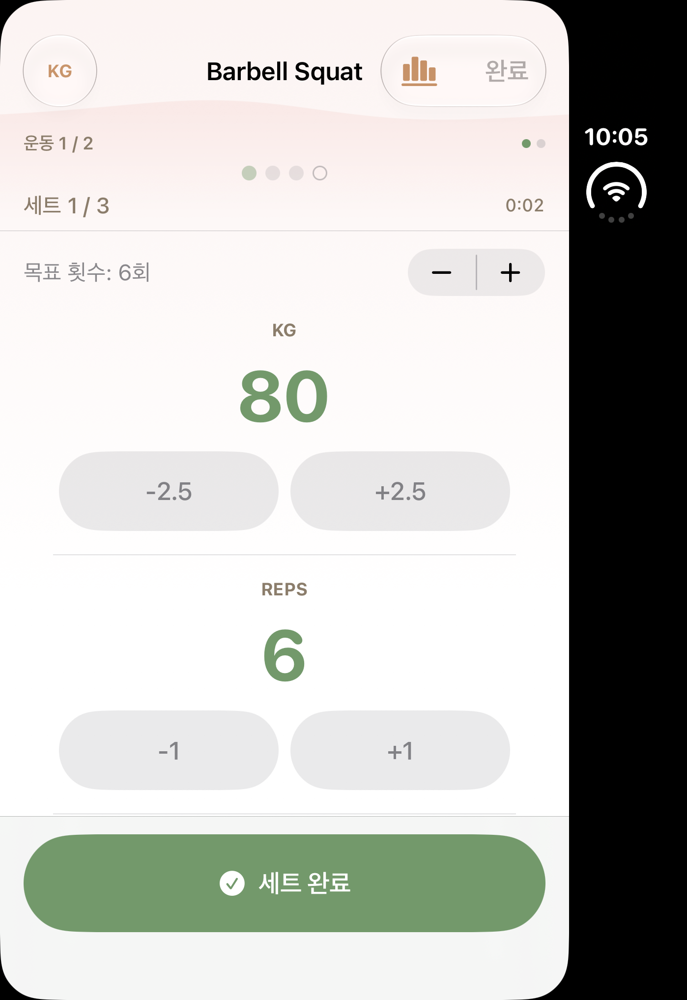
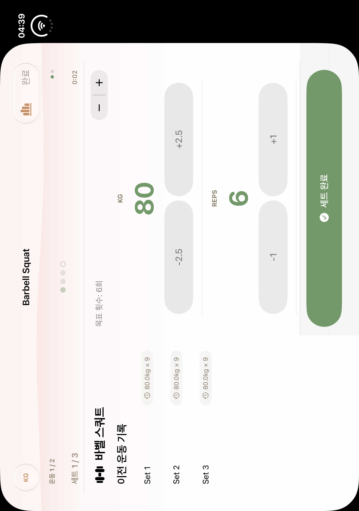
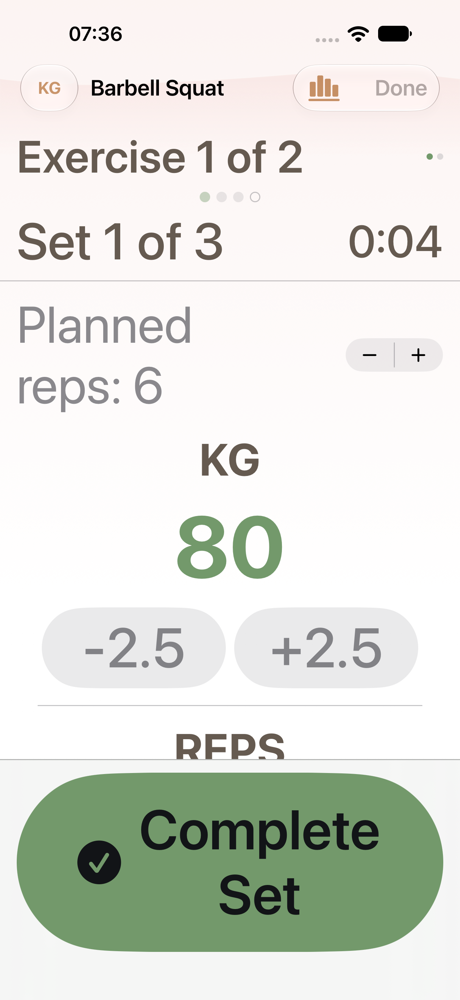
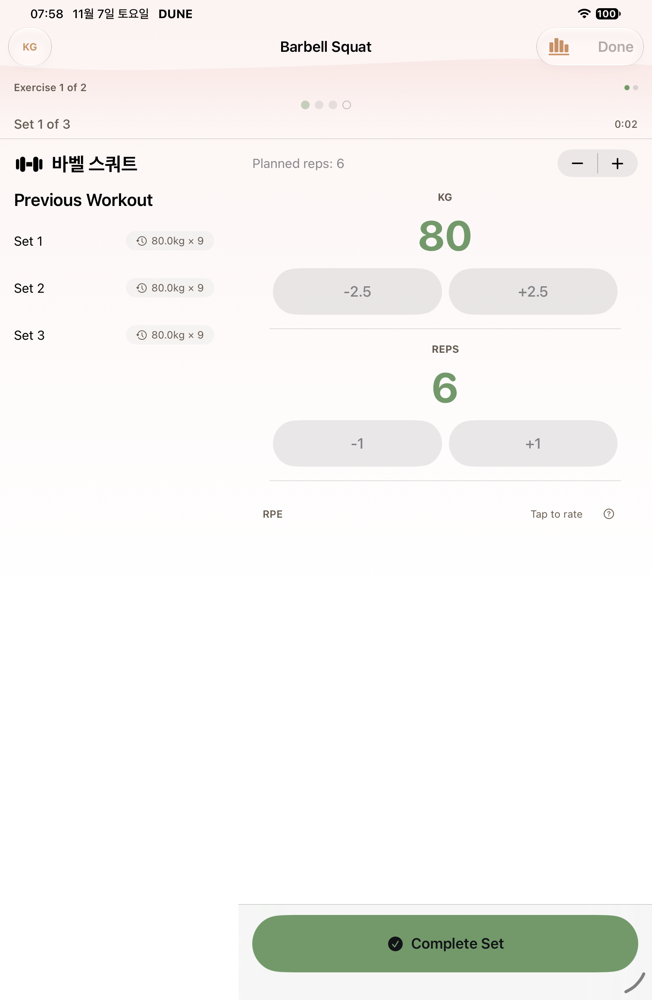
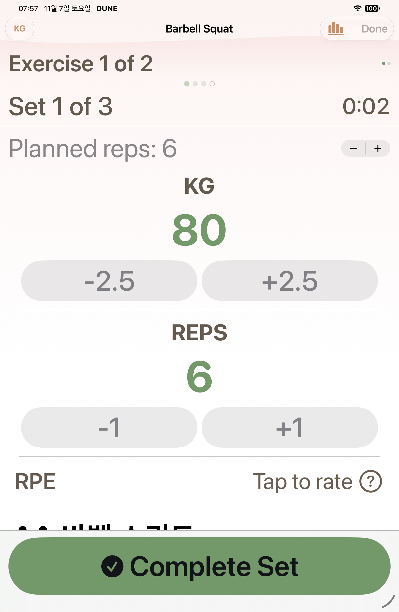

W16 · B14+B15 native gallery
Native PNG/AX pairs are classified by completed selector receipts. Historical captures and failure diagnostics are separate. See manifest for source revisions and limits.
Pending or limited- phone W16 normal first template session after transition: named PNG/AX pair absent
- phone W16 MAX first template session after transition: named PNG/AX pair absent
- phone-retry1 W16 normal first template session after transition: named PNG/AX pair absent
- ipad-retry1 W16 normal first template session after transition: named PNG/AX pair absent
- ipad-retry1 W16 MAX first template session after transition: named PNG/AX pair absent
- Duo closed/open current-source capture pending; historical baselines only
- Before-teardown failure attachments never count as passed B14+B15 evidence

regular · historical
W16 historical baseline

ipad · historical
W16 historical baseline

duo · historical
W16 historical baseline

duo-open · historical
W16 historical baseline

regular · after
W16 MAX first template session after transition
AX tree
ipad · after
W16 normal first template session after transition
AX tree
ipad · after
W16 MAX first template session after transition
AX tree